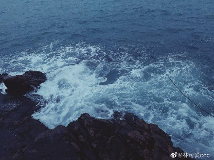

东极岛
DONGJI ISLAND
地理位置
东至两兄弟屿接东海（12海里外为公海），南至黄大洋接洋鞍渔场，西至岱巨洋，北至嵊山渔场，陆域面积为11.7平方公里，海域面积约500平方公里，共有28个大小岛屿和108块礁组成。其中庙子湖、青浜、黄兴、东福山为四个住人岛，庙子湖岛陆域面积为2.638平方公里，青浜岛陆域面积为1.408平方公里，黄兴岛陆域面积为2.437平方公里，东福山陆域面积2.953平方公里，镇政府驻庙子湖岛，下辖一个社区一个村四个经济合作社。
文化
1999年10月被浙江省文化厅命名为“浙江东海明珠工程”和被舟山市命名为“海岛百花工程”。庙子湖建有文化中心楼，内有图书室等娱乐设施。2009年7月，原文化中心楼改建成东极历史文化博物馆，分为里斯本丸沉船事件纪念馆、民俗民风馆和渔民画展厅。随着旅游业的开发，进一步挖掘渔家文化，特别是带动了东极渔民画的发展，现拥有一支有10人组成的渔民画创作队伍，渔民画作品多次在省、市乃至全国获奖，“东极渔民画”在国内外和艺术界都享有一定的知名度。
旅游
东极镇相对方兴未艾的旅游时尚来说，简直就是一块尚未开垦的处女地。东极因有着优越独特的地理位置、美不胜收的极地风光、丰富多样的礁贝资源、古朴浓郁的渔家文化而备受旅游业行家的推崇，东极山石风光独树一帜，东极海面景况跌宕起伏，东极海洋文化原始清新，实为过惯了喧嚣的城市生活的人们理想的旅游休闲之胜地。
